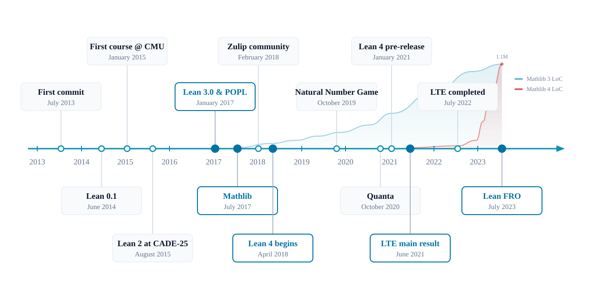

This Lecture Series
Lean 4 from the perspective of program verification.
-
Introduction to Lean and dependent type theory — today
-
Programming and proving in Lean — inductive types, type classes, the tactic framework
-
Proof automation and AI —
simp,grind,bv_decide, and what AI already does with Lean -
Software verification in Lean — Hoare logic, a verification condition generator, and how it scales
Programs, specifications, and proofs in the same language.
Exercises: a self-contained Lean project, one file per lecture, with solutions.
Today
-
What is Lean? A short history.
-
Getting started: installation, editor, where to find things.
-
What Lean is used for: mathematics, industry, AI. Facts and numbers.
-
Introduction to Dependent type theory.
-
every term has a type; propositions are types; proofs are programs
-
your first proofs, as terms and with tactics
-
What is Lean?
-
A programming language and a proof assistant.
-
Same language for code, specifications, and proofs. No translation layer.
-
Small trusted kernel. Proofs can be exported and independently checked.
-
Lean is implemented in Lean. Very extensible.
-
~300,000 unique installations: VS Code (170K) + Open VSX (130K).
def reverse : List α → List α
| [] => []
| x :: xs => reverse xs ++ [x]
theorem reverse_append (xs ys : List α)
: reverse (xs ++ ys) = reverse ys ++ reverse xs := by
induction xs with
| nil => simp [reverse]
| cons x xs ih => simp [reverse, ih]
#eval reverse [1, 2, 3]
Lean: The First 10 Years

Project started in 2013. Lean 4 officially released in 2023, implemented in Lean itself. The Lean FRO: a nonprofit, building Lean full-time since 2023.
Lean is a "Game"
"You have written my favorite computer game" — Kevin Buzzard, Prof. of Mathematics, Imperial College
def odd (n : Nat) : Prop := ∃ k, n = 2 * k + 1
theorem square_of_odd_is_odd : odd n → odd (n * n) := by
intro ⟨k₁, e₁⟩
simp [e₁, odd]
exists 2 * k₁ * k₁ + 2 * k₁
lia
The "game board": you see goals and hypotheses, then apply "moves" (tactics).
Each tactic transforms the game board.
The kernel checks the final proof term.
What Do You Have to Trust?
-
The elaborator turns what you write into fully explicit kernel terms.
-
The kernel — a small type checker — rechecks every definition and proof.
-
Tactics,
simp,grind, AI-generated proofs: all produce terms the kernel checks. Bugs in tactics cannot give you invalid theorems. -
Proofs can be exported and rechecked by independent kernels (more on this in Lecture 3).
theorem two_ne_three : 2 ≠ 3 := by decide
#print axioms two_ne_three
#print axioms: what a proof ultimately depends on.
Lean is Implemented in Lean
-
Parser, elaborator, compiler, tactic framework, build system: written in Lean.
-
Users extend Lean in Lean, at every level:
-
notation and macros (Lecture 2)
-
tactics (Lecture 4: we implement a verification condition generator)
-
elaborator, compiler
-
entire domain-specific languages
-
-
These slides are Lean files, written in Verso. Every code example you see is checked by Lean when the slides are built.
Installing Lean
Recommended procedure: lean-lang.org/install
-
elan manages Lean versions. Projects pin their version in
lean-toolchain; the right compiler is downloaded automatically. -
Editor: VS Code with the Lean 4 extension (also: Open VSX for VSCodium, Neovim, Emacs).
-
No installation at all: live.lean-lang.org runs full Lean in the browser.
For this course: clone the GitHub repository, open the folder in VS Code, done. The exercises use only the standard library — nothing to download beyond the toolchain.
The Editor Experience
-
The goal panel shows the game board: hypotheses and goals at the cursor.
-
Hover for types and documentation.
-
Errors appear as you type; the file is checked continuously.
-
#check,#eval,#printanswer questions inline.

Where to Find Things
-
Theorem Proving in Lean 4 — this lecture follows its first chapters.
-
Functional Programming in Lean — Lean as a programming language (Lecture 2).
-
Lean language reference — the definitive manual.
-
Loogle — search the library by name or by type shape.
-
Lean Zulip — the community. Beginner questions welcome.
-
Natural Number Game — learn tactics as a game, in the browser.
What is Lean Used For?
Mathlib: The Lean Mathematical Library
An open-source, community-driven library. Today:
-
280,000+ formalized theorems.
-
2.4M+ lines of Lean. 50,000+ lines of extensions.
-
750+ contributors.
-
1,500+ type classes, 20,000+ instances.

Mathematics Is Adopting Lean
Six Fields Medalists engaged: Tao, Scholze, Viazovska, Gowers, Hairer, Freedman.
-
Liquid Tensor Experiment (completed) — Commelin
-
The Polynomial Freiman-Ruzsa Conjecture (completed) — Tao
-
Equational Theories Project (completed) — Tao
-
Carleson's Theorem (completed) — van Doorn
-
Sphere Packing — Birkbeck, Hariharan, Lee, Ma, Mehta, Viazovska
-
Fermat's Last Theorem (in progress) — Buzzard
-
Inter-Universal Teichmüller Theory (in progress) — Mochizuki
At this scale, mathematics needs build systems, dependency graphs, code review, and a precise medium for communication.
The Liquid Tensor Experiment
November 2020: Peter Scholze posed a formalization challenge.
"I spent much of 2019 obsessed with the proof of this theorem, almost getting crazy over it. I still have some small lingering doubts." — Peter Scholze
Johan Commelin led a team that verified the proof, with only minor corrections.
"The Lean Proof Assistant was really that: an assistant in navigating through the thick jungle that this proof is." — Peter Scholze

Cedar (AWS): Verified Authorization
Cedar — open-source authorization policy language. Used by AWS Verified Permissions and AWS Verified Access.
The model is written in Lean, alongside the Rust production code. The Lean model is ~10× smaller than the Rust implementation.

-
Verified components: evaluator, authorizer, validator.
-
~100M differential random tests nightly. Lean: 5 μs/test. Rust: 7 μs/test.
-
Release gate: no Cedar version ships unless model, proofs, and differential tests are current.
SymCrypt (Microsoft): Verified Cryptography

SymCrypt — Microsoft's core cryptographic library, rewritten in Rust.
Aeneas translates the safe Rust to pure functional Lean code.
The first release includes complete proofs for ML-KEM and SHA-3 code running in Windows Insider builds today.
"We are verifying code faster than we can write it." — Son Ho, SymCrypt, Microsoft
lean-zip: Verified Compression, Competitive Performance
DEFLATE (the zlib format) implemented in Lean, proved correct.
theorem inflate_deflateRaw (data : ByteArray) (level : UInt8)
(maxOutputSize : Nat) (hsize : data.size ≤ maxOutputSize) :
inflate (deflateRaw data level) maxOutputSize = .ok data
On the silesia corpus (212 MB), lean-zip beats miniz_oxide — the standard pure-Rust implementation — at every compression level; 30% faster at the
default level 6.
The performance came from AI agents optimizing the code autonomously:
"The Lean library isn't just tested and validated, it's proved correct. This allows us to let AIs loose optimizing the code, requiring that they update the proof whenever the implementation materially changes." — Kim Morrison
Why Lean is faster than Rust, July 2026.
AI and Lean
Every medal-level IMO AI with formal proofs uses Lean:
-
AlphaProof (Google DeepMind) — silver medal, IMO 2024
-
Aristotle (Harmonic) — gold medal, IMO 2025
-
Seed Prover (ByteDance) — silver medal, IMO 2025
AI plays the same game we saw earlier: goals, hypotheses, tactics.
The kernel checks every proof — an AI cannot "convince" Lean of a false statement without a kernel bug.
Much more on this in Lecture 3.
Dependent Type Theory
Every Term Has a Type
#check 42
#check true
#check "Marktoberdorf"
#check [1, 2, 3]
#check (2, true)
-
#check ereports the type ofe. -
Every well-formed expression has a type.
-
The type checker is the entire game: a proposition will be a type, and checking a proof will be type checking.
Functions
def add (a b : Nat) : Nat := a + b
#eval add 2 3
#check add
#check add 2
#check fun (n : Nat) => n + 1
-
add : Nat → Nat → Nat— functions of several arguments are curried:add 2is itself a function,Nat → Nat. -
→associates to the right:Nat → (Nat → Nat). -
#evalruns programs; Lean is a compiled language (Lecture 2).
Functions are First-Class
def twice (f : Nat → Nat) (x : Nat) : Nat := f (f x)
#eval twice (fun n => n + 3) 10
def compose (f : β → γ) (g : α → β) (x : α) : γ := f (g x)
#check @compose
-
Functions take functions and return functions.
-
α,β,γare implicit type arguments — Lean inserts and infers them.@composeshows the full type.
Types are Terms
#check Nat
#check Nat → Nat
#check List
#check List Nat
#check Type
#check Type 1
-
Types are ordinary terms:
Nat : Type, andType : Type 1, ... — an infinite hierarchy of universes. -
List : Type → Typeis a function on types. -
No special "type language": one language for everything.
Types Can Depend on Values
#check Fin
#check BitVec
#check (7 : Fin 10)
def zeros (n : Nat) : BitVec n := 0
#check zeros
-
Fin 10: natural numbers below10.BitVec 32: bitvectors of width 32. -
zeros : (n : Nat) → BitVec n— the result type depends on the argument value. This is a dependent function type. -
This is the "dependent" in dependent type theory, and it is what lets types express specifications.
Propositions are Types
#check 2 + 2 = 4
#check 2 + 2 = 5
#check ∀ n : Nat, 0 ≤ n
#check Nat → Nat
-
Propis the universe of propositions. -
2 + 2 = 5is a perfectly well-formed proposition. Stating is not proving. -
A proposition is a type; its inhabitants are its proofs.
-
A false proposition is an empty type: no proof exists.
Proofs are Programs
def identity (α : Type) (a : α) : α := a
theorem p_imp_p (p : Prop) (h : p) : p := h
-
The same shape: given a type and an element, return an element.
-
theoremisdef— a proof is a term, checked by the same kernel that checks programs. -
This is the Curry–Howard correspondence.
Implication is the Function Arrow
theorem modus_ponens (p q : Prop) (hpq : p → q) (hp : p) : q :=
hpq hp
theorem imp_trans (p q r : Prop) (h₁ : p → q) (h₂ : q → r) : p → r :=
fun hp => h₂ (h₁ hp)
-
A proof of
p → qis a function from proofs ofpto proofs ofq. -
Modus ponens is function application.
-
Transitivity of implication is function composition.
Conjunction is a Structure
structure And (a b : Prop) : Prop where
intro ::
left : a
right : b
example (p q : Prop) (hp : p) (hq : q) : p ∧ q := And.intro hp hq
example (p q : Prop) (hp : p) (hq : q) : p ∧ q := ⟨hp, hq⟩
example (p q : Prop) (h : p ∧ q) : q ∧ p := ⟨h.right, h.left⟩
example (p q : Prop) (h : p ∧ q) : q ∧ p := ⟨h.2, h.1⟩
-
∧is not built in — it is an ordinary structure (this is its actual definition). -
⟨_, _⟩is the anonymous constructor;h.leftandh.rightare projections. A proof of a conjunction is a pair.
Disjunction is an Inductive Type
inductive Or (a b : Prop) : Prop where
| inl (h : a)
| inr (h : b)
example (p q : Prop) (h : p ∨ q) : q ∨ p :=
match h with
| .inl hp => .inr hp
| .inr hq => .inl hq
-
Two constructors: a proof of
p ∨ qcarries a proof of one side. -
Using a disjunction is pattern matching — case analysis is
match. -
Inductive types are the topic of Lecture 2;
Oris a first example.
Negation and False
inductive False : Prop
def Not (a : Prop) : Prop := a → False
example (p : Prop) : ¬(p ∧ ¬p) :=
fun h => h.right h.left
example (p : Prop) : ¬(p ∧ ¬p) :=
fun h : p ∧ ¬p =>
have h₁ : p := h.left
have h₂ : ¬p := h.right
h₂ h₁
-
Falseis an inductive type with no constructors — no proof exists. -
¬pis justp → False. The example above is function application again. -
From
Falseeverything follows:False.elim : False → C.
The Universal Quantifier
example (p q : Nat → Prop) (h : ∀ x, p x ∧ q x) : ∀ x, p x :=
fun x => (h x).left
#check ∀ n : Nat, 0 ≤ n
#check (n : Nat) → 0 ≤ n
-
∀ x : α, p xis the dependent function type(x : α) → p x— the same construct aszeros : (n : Nat) → BitVec n. -
To prove: a function taking each
xto a proof. To use: apply it. -
Nothing new was added: quantifiers were already in the type system.
The Existential Quantifier
example : ∃ n : Nat, n * n = 25 := ⟨5, rfl⟩
example (p : Nat → Prop) (h : ∃ x, p x ∧ x > 0) : ∃ x, p x :=
match h with
| Exists.intro x (And.intro hp _) => Exists.intro x hp
example (p : Nat → Prop) (h : ∃ x, p x ∧ x > 0) : ∃ x, p x :=
match h with
| ⟨x, hp, _⟩ => ⟨x, hp⟩
-
A proof of
∃ x, p xis a pair: a witness and a proof for it. -
To use one, pattern match — like
And, with a twist: the witness may only be used to prove propositions (next slide).
Prop and Type
theorem proofs_are_equal (p : Prop) (h₁ h₂ : p) : h₁ = h₂ := rfl
def Positive : Type := { n : Nat // 0 < n }
def three : Positive := ⟨3, by decide⟩
#eval three.val
-
Proof irrelevance: any two proofs of a proposition are equal — only that a proposition holds matters, never which proof.
-
Proofs are erased by the compiler:
threeis just3at runtime. Specifications cost nothing at runtime. -
{ n : Nat // 0 < n }is a subtype: a value bundled with a proof — the shape of requires/ensures contracts in Lecture 4.
Equality
example : 2 + 2 = 4 := rfl
example (a b c : Nat) (h₁ : a = b) (h₂ : b = c) : a = c :=
h₁.trans h₂
example (f : Nat → Nat) (a b : Nat) (h : a = b) : f a = f b :=
congrArg f h
-
rflprovesa = bwhen both sides compute to the same value — definitional equality. -
Eqis reflexive, symmetric (h.symm), transitive (h.trans), and congruent (congrArg). -
Eqis an inductive type too.
inductive Eq {α : Sort u} (a : α) : α → Prop
| refl : Eq a a
theorem Eq.symm (h : Eq a b) : Eq b a :=
match h with
| .refl => .refl
Leibniz encoding of equality in impredicative higher-order logic
def Eq {α : Sort u} (a b : α) : Prop :=
∀ (p : α → Prop), p a → p b
theorem Eq.refl {α : Sort u} (a : α) : Eq a a :=
fun (p : α → Prop) (h : p a) => h
theorem Eq.symm {α : Sort u} {a b : α} (h : Eq a b) : Eq b a :=
fun (p : α → Prop) (hb : p b) => h (fun x => p x → p a) id hb
theorem Eq.trans {a b c : α} (h₁ : Eq a b) (h₂ : Eq b c) : Eq a c :=
fun (p : α → Prop) (ha : p a) => h₂ p (h₁ p ha)
theorem congrArg (f : α → β) (a b : α) (h : Eq a b) : Eq (f a) (f b) :=
fun (p : β → Prop) (hp : p (f a)) => h (fun x => p (f x)) hp
Tactic Mode: the Game Board
example (p q : Prop) (hp : p) (hq : q) : p ∧ q := ⟨hp, hq⟩
example (p q : Prop) (hp : p) (hq : q) : p ∧ q := by
constructor
exact hp
exact hq
-
byenters tactic mode: you see hypotheses and goals, and apply moves. -
The two proofs above produce the same term — tactics are programs that construct proof terms.
-
Term mode and tactic mode mix freely; use whichever is clearer.
First Tactics: intro, apply, exact
example (p q r : Prop) (hpq : p → q) (hqr : q → r) : p → r := by
intro hp
apply hqr
apply hpq
exact hp
-
intro hp— move the hypothesis of an implication (or∀) into context. -
apply hqr— work backwards: to prover, it suffices to proveq. -
exact hp— the goal is exactly this term. -
Compare with the term proof
fun hp => hqr (hpq hp): same structure, written back-to-front.
Case Analysis: cases and obtain
example (p q : Prop) (h : p ∨ q) : q ∨ p := by
cases h with
| inl hp => exact Or.inr hp
| inr hq => exact Or.inl hq
example (p : Nat → Prop) (h : ∃ x, p x ∧ x > 0) : ∃ x, p x := by
obtain ⟨x, hp, _⟩ := h
exact ⟨x, hp⟩
-
casesismatchin tactic mode, one goal per constructor. -
obtain ⟨x, hp, _⟩destructures in one step — the workhorse for∃and∧.
Automation: a First Look
example : 123 * 456 = 56088 := by decide
example (n : Nat) : n + 0 = n := by simp
example (a b c : Nat) : a + b + c = c + b + a := by grind
-
decide— evaluate a decidable proposition. -
simp— rewriting with a database of equations. -
grind— Lean's general-purpose automation.
sorry and #print
theorem and_swap (p q : Prop) (h : p ∧ q) : q ∧ p := ⟨h.right, h.left⟩
#print and_swap
example (p q r : Prop) (h : (p ∧ q) ∧ r) : p ∧ (q ∧ r) := by
sorry
-
sorrycloses any goal and reports a warning: sketch first, prove later. Every exercise file compiles from the start —sorrymarks your work. -
#printshows the proof term a tactic built.
The Correspondence
Logic | Type theory |
|---|---|
proposition | type |
proof | term |
| function type |
| dependent function type |
| structure (pair) |
| inductive type (two constructors) |
|
|
| witness–proof pair |
One system. The kernel only ever checks types.
Exercises
Exercises/Lecture1.lean — ordered by difficulty, sorry-driven:
-
Small functions, checked by
#guard. -
Propositional logic: each lemma twice — as a term, then with tactics.
-
Quantifiers.
-
Equality and
calc. -
Formalize statements without proving them (one is false, one is open).
-
The barber paradox.
Hints point at apply?, simp?, and Loogle. Solutions with notes are in
Solutions/.
No installation? live.lean-lang.org.
Summary
-
Lean: one language for programs, specifications, and proofs; a small kernel checks everything.
-
Real adoption: Mathlib, AWS, Google, Meta, Microsoft, several startups, every medal-level IMO AI.
-
Dependent type theory: propositions are types, proofs are programs; quantifiers are dependent function types.
-
Tactics construct proof terms; the kernel checks them.
Next lecture: inductive types, type classes, Lean as a programming language — and proofs about programs.